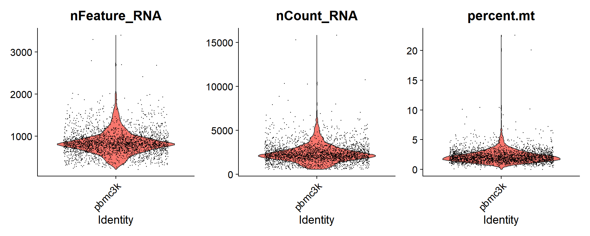
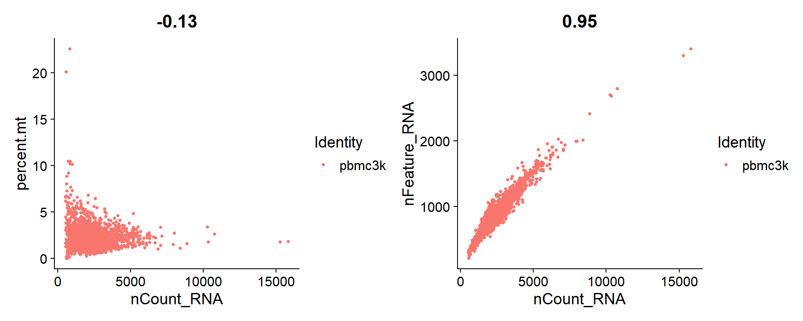
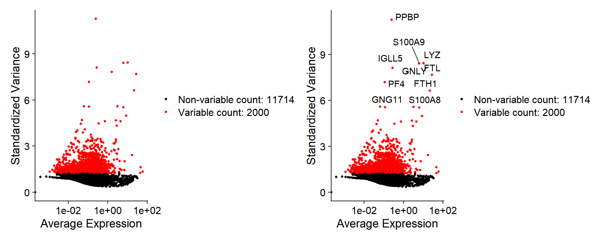

Last updated: 2024-08-02
Checks: 7 0
Knit directory: KODAMA-Analysis/
This reproducible R Markdown analysis was created with workflowr (version 1.7.1). The Checks tab describes the reproducibility checks that were applied when the results were created. The Past versions tab lists the development history.
Great! Since the R Markdown file has been committed to the Git repository, you know the exact version of the code that produced these results.
Great job! The global environment was empty. Objects defined in the global environment can affect the analysis in your R Markdown file in unknown ways. For reproduciblity it’s best to always run the code in an empty environment.
The command set.seed(20240618) was run prior to running
the code in the R Markdown file. Setting a seed ensures that any results
that rely on randomness, e.g. subsampling or permutations, are
reproducible.
Great job! Recording the operating system, R version, and package versions is critical for reproducibility.
Nice! There were no cached chunks for this analysis, so you can be confident that you successfully produced the results during this run.
Great job! Using relative paths to the files within your workflowr project makes it easier to run your code on other machines.
Great! You are using Git for version control. Tracking code development and connecting the code version to the results is critical for reproducibility.
The results in this page were generated with repository version b8caff4. See the Past versions tab to see a history of the changes made to the R Markdown and HTML files.
Note that you need to be careful to ensure that all relevant files for
the analysis have been committed to Git prior to generating the results
(you can use wflow_publish or
wflow_git_commit). workflowr only checks the R Markdown
file, but you know if there are other scripts or data files that it
depends on. Below is the status of the Git repository when the results
were generated:
Ignored files:
Ignored: .Rproj.user/
Unstaged changes:
Modified: analysis/_site.yml
Note that any generated files, e.g. HTML, png, CSS, etc., are not included in this status report because it is ok for generated content to have uncommitted changes.
These are the previous versions of the repository in which changes were
made to the R Markdown (analysis/single_cell2.Rmd) and HTML
(docs/single_cell2.html) files. If you’ve configured a
remote Git repository (see ?wflow_git_remote), click on the
hyperlinks in the table below to view the files as they were in that
past version.
| File | Version | Author | Date | Message |
|---|---|---|---|---|
| Rmd | b8caff4 | ModupeOjo | 2024-08-02 | Start my new project |
# Introduction
Single-cell RNA sequencing (scRNA-seq) has revolutionized our ability to understand the complexity of biological systems at an unprecedented resolution. By profiling the transcriptomes of individual cells, researchers can uncover cellular heterogeneity, identify novel cell types, and understand dynamic biological processes such as differentiation, development, and disease progression.
To analyze scRNA-seq data effectively, robust computational tools are essential. The Seurat package, developed by the Satija Lab, is widely used for scRNA-seq data analysis. It provides comprehensive methods for quality control, data normalization, identification of highly variable genes, dimensionality reduction, clustering, and differential expression analysis.
In addition to Seurat, the KODAMA package offers powerful techniques for data visualization and unsupervised clustering. KODAMA (Kernel Density Approximation and Manifold Alignment) is particularly useful for detecting complex structures and relationships in high-dimensional data.
In this tutorial, we will perform a step-by-step analysis of a publicly available scRNA-seq dataset using Seurat and KODAMA. The dataset consists of peripheral blood mononuclear cells (PBMCs) from a healthy donor, sequenced by 10x Genomics.
library(dplyr)
library(Seurat)
library(patchwork)
library(KODAMA)
library(KODAMAextra)The raw data can be found here.
# Read the 10X Genomics data
pbmc.data <- Read10X(data.dir = "C:/Users/T0083019/Desktop/data/hg19")
# Replace underscores with dashes in the row names (feature names)
rownames(pbmc.data) <- gsub("_", "-", rownames(pbmc.data))
# Create the Seurat object
pbmc <- CreateSeuratObject(counts = pbmc.data, project = "pbmc3k", min.cells = 3, min.features = 200)
pbmcAn object of class Seurat
13714 features across 2700 samples within 1 assay
Active assay: RNA (13714 features, 0 variable features)
1 layer present: countspbmc[["percent.mt"]] <- PercentageFeatureSet(pbmc, pattern = "^MT-")
VlnPlot(pbmc, features = c("nFeature_RNA", "nCount_RNA", "percent.mt"), ncol = 3)
plot1 <- FeatureScatter(pbmc, feature1 = "nCount_RNA", feature2 = "percent.mt")
plot2 <- FeatureScatter(pbmc, feature1 = "nCount_RNA", feature2 = "nFeature_RNA")
plot1 + plot2
pbmc <- subset(pbmc, subset = nFeature_RNA > 200 & nFeature_RNA < 2500 & percent.mt < 5)pbmc <- NormalizeData(pbmc, normalization.method = "LogNormalize", scale.factor = 10000)
pbmc <- FindVariableFeatures(pbmc, selection.method = "vst", nfeatures = 2000)
# Identify the 10 most highly variable genes
top10 <- head(VariableFeatures(pbmc), 10)
# Plot variable features with and without labels
plot1 <- VariableFeaturePlot(pbmc)
plot2 <- LabelPoints(plot = plot1, points = top10, repel = TRUE)
plot1 + plot2
sessionInfo()R version 4.3.0 (2023-04-21 ucrt)
Platform: x86_64-w64-mingw32/x64 (64-bit)
Running under: Windows 10 x64 (build 19045)
Matrix products: default
locale:
[1] LC_COLLATE=English_South Africa.utf8 LC_CTYPE=English_South Africa.utf8
[3] LC_MONETARY=English_South Africa.utf8 LC_NUMERIC=C
[5] LC_TIME=English_South Africa.utf8
time zone: Africa/Johannesburg
tzcode source: internal
attached base packages:
[1] parallel stats graphics grDevices utils datasets methods
[8] base
other attached packages:
[1] KODAMAextra_1.0 e1071_1.7-14 doParallel_1.0.17 iterators_1.0.14
[5] foreach_1.5.2 KODAMA_3.0 umap_0.2.10.0 Rtsne_0.17
[9] minerva_1.5.10 patchwork_1.2.0 Seurat_5.0.2 SeuratObject_5.0.1
[13] sp_2.1-3 dplyr_1.1.4 workflowr_1.7.1
loaded via a namespace (and not attached):
[1] RColorBrewer_1.1-3 rstudioapi_0.15.0 jsonlite_1.8.8
[4] magrittr_2.0.3 spatstat.utils_3.0-4 farver_2.1.1
[7] rmarkdown_2.26 fs_1.6.3 vctrs_0.6.5
[10] ROCR_1.0-11 spatstat.explore_3.2-6 askpass_1.2.0
[13] htmltools_0.5.7 sass_0.4.8 sctransform_0.4.1
[16] parallelly_1.37.1 KernSmooth_2.23-22 bslib_0.6.1
[19] htmlwidgets_1.6.4 ica_1.0-3 plyr_1.8.9
[22] plotly_4.10.4 zoo_1.8-12 cachem_1.0.8
[25] whisker_0.4.1 igraph_2.0.3 mime_0.12
[28] lifecycle_1.0.4 pkgconfig_2.0.3 Matrix_1.6-5
[31] R6_2.5.1 fastmap_1.1.1 fitdistrplus_1.1-11
[34] future_1.33.1 shiny_1.8.0 digest_0.6.34
[37] colorspace_2.1-0 ps_1.7.6 rprojroot_2.0.4
[40] tensor_1.5 RSpectra_0.16-1 irlba_2.3.5.1
[43] labeling_0.4.3 progressr_0.14.0 fansi_1.0.6
[46] spatstat.sparse_3.0-3 httr_1.4.7 polyclip_1.10-6
[49] abind_1.4-5 compiler_4.3.0 proxy_0.4-27
[52] withr_3.0.0 fastDummies_1.7.3 highr_0.10
[55] R.utils_2.12.3 MASS_7.3-60.0.1 openssl_2.1.1
[58] tools_4.3.0 lmtest_0.9-40 httpuv_1.6.14
[61] future.apply_1.11.1 goftest_1.2-3 R.oo_1.26.0
[64] glue_1.7.0 callr_3.7.5 nlme_3.1-164
[67] promises_1.2.1 grid_4.3.0 getPass_0.2-4
[70] cluster_2.1.6 reshape2_1.4.4 generics_0.1.3
[73] gtable_0.3.4 spatstat.data_3.0-4 R.methodsS3_1.8.2
[76] class_7.3-22 tidyr_1.3.1 data.table_1.15.2
[79] utf8_1.2.4 spatstat.geom_3.2-9 RcppAnnoy_0.0.22
[82] ggrepel_0.9.5 RANN_2.6.1 pillar_1.9.0
[85] stringr_1.5.1 spam_2.10-0 RcppHNSW_0.6.0
[88] later_1.3.2 splines_4.3.0 lattice_0.22-5
[91] survival_3.5-8 deldir_2.0-4 tidyselect_1.2.1
[94] miniUI_0.1.1.1 pbapply_1.7-2 knitr_1.45
[97] git2r_0.33.0 gridExtra_2.3 scattermore_1.2
[100] xfun_0.42 matrixStats_1.2.0 stringi_1.8.3
[103] lazyeval_0.2.2 yaml_2.3.8 evaluate_0.23
[106] codetools_0.2-19 tibble_3.2.1 cli_3.6.2
[109] uwot_0.1.16 xtable_1.8-4 reticulate_1.35.0
[112] munsell_0.5.0 processx_3.8.3 jquerylib_0.1.4
[115] Rcpp_1.0.12 globals_0.16.3 spatstat.random_3.2-3
[118] png_0.1-8 ellipsis_0.3.2 ggplot2_3.5.0
[121] dotCall64_1.1-1 listenv_0.9.1 viridisLite_0.4.2
[124] scales_1.3.0 ggridges_0.5.6 leiden_0.4.3.1
[127] purrr_1.0.2 rlang_1.1.3 cowplot_1.1.3